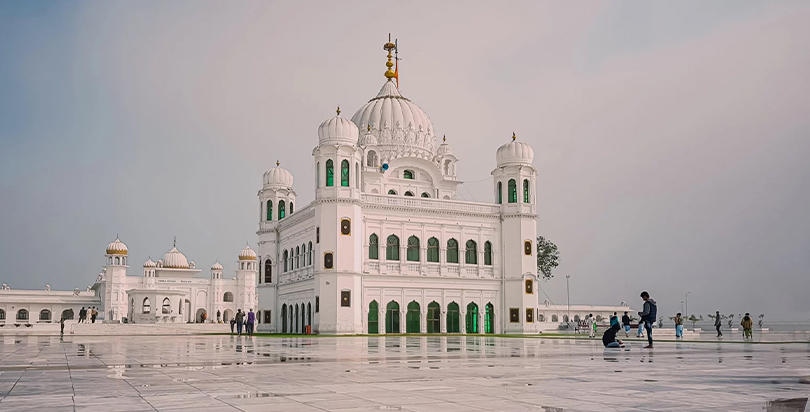

<div class="portfolio-single-load clearfix">
    <div class="custom-full-width-box">
        <div class="custom-container">
            <div class="custom-row align-items-center">
                <div class="custom-image-column">
                    
                </div>
                <div class="custom-text-column">
                    <h2 class="custom-heading">Gurdwara Kartarpur Sahib, Kartarpur</h2>
                    <p class="custom-paragraph">
                        Gurdwara Kartarpur Sahib, located in Kartarpur, Pakistan, marks the final resting place of Guru Nanak Dev Ji, the founder of Sikhism. Built in 1522, this revered gurdwara holds deep spiritual significance for Sikhs worldwide. Guru Nanak Dev Ji spent the last 18 years of his life here, spreading his message of love, equality, and compassion. In November 2019, the Kartarpur Corridor was inaugurated, allowing Sikh pilgrims from India and around the world to visit this sacred site visa-free.
                    </p>
                </div>
            </div>
        </div>
    </div><!-- .custom-full-width-box end -->

</div><!-- end single-project -->
